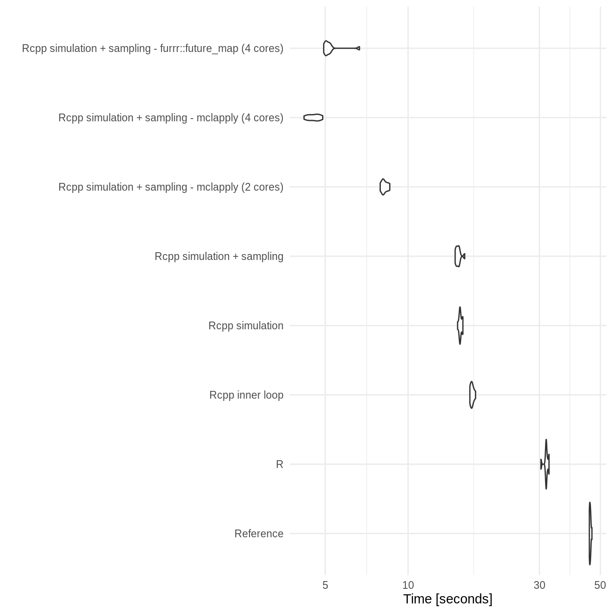
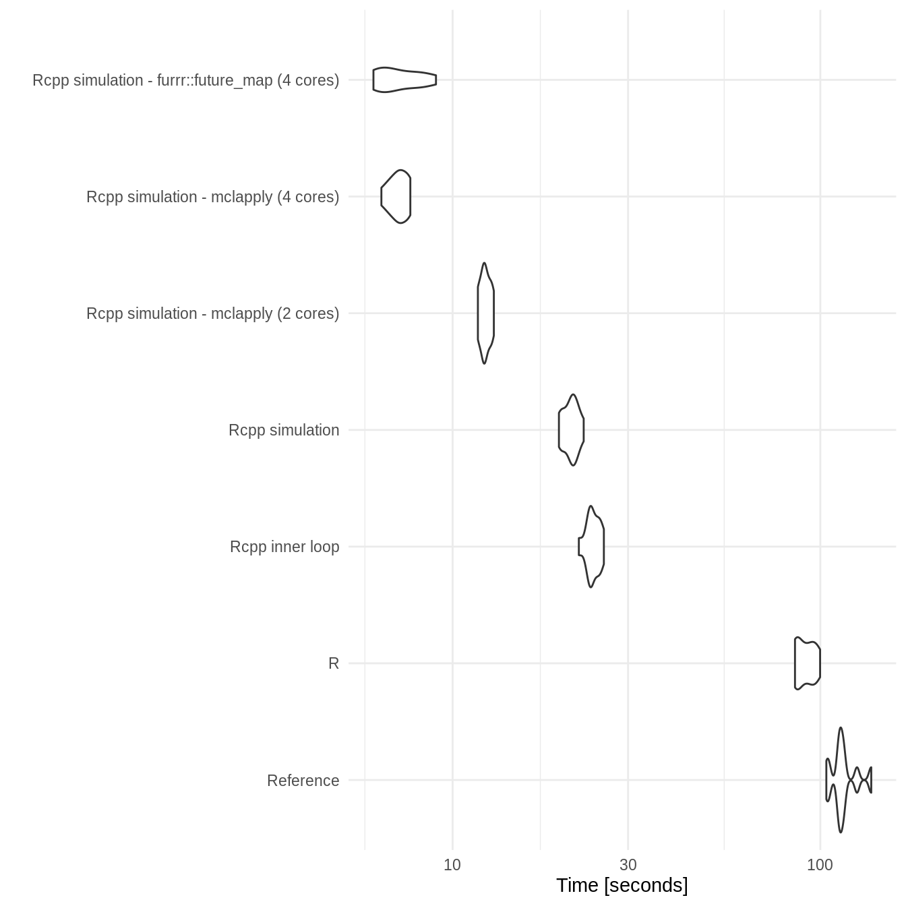

vignettes/benchmarking.Rmd
benchmarking.RmdThe SpeedyMarkov and reference implementations have been benchmarked with a range of optimisations including making use of Rcpp and parallisation. Several parallisation approaches have been explored as has the use of a varying number of cores. The benchmarking grid has been implemented within SpeedyMarkov - see below for details.
library(SpeedyMarkov)
library(microbenchmark)
library(parallel)
library(furrr)
#> Loading required package: future
library(ggplot2)SpeedyMarkov::benchmark_markov
#> function (markov_model = NULL, reference = NULL, duration = NULL,
#> samples = NULL, times = 1)
#> {
#> future::plan(future::multiprocess, workers = 4)
#> benchmark <- microbenchmark::microbenchmark(Reference = {
#> reference(cycles = duration, samples = samples)
#> }, R = {
#> markov_ce_pipeline(markov_model(), duration = duration,
#> samples = samples, sim_type = "base")
#> }, `Rcpp inner loop` = {
#> markov_ce_pipeline(markov_model(), duration = duration,
#> samples = samples, sim_type = "armadillo_inner")
#> }, `Rcpp simulation` = {
#> markov_ce_pipeline(markov_model(), duration = duration,
#> samples = samples, sim_type = "armadillo_all")
#> }, `Rcpp simulation - mclapply (2 cores)` = {
#> markov_ce_pipeline(markov_model(), duration = duration,
#> samples = samples, sim_type = "armadillo_all", batches = 2,
#> batch_fn = parallel::mclapply, mc.cores = 2)
#> }, `Rcpp simulation - mclapply (4 cores)` = {
#> markov_ce_pipeline(markov_model(), duration = duration,
#> samples = samples, sim_type = "armadillo_all", batches = 4,
#> batch_fn = parallel::mclapply, mc.cores = 4)
#> }, `Rcpp simulation - furrr::future_map (4 cores)` = {
#> markov_ce_pipeline(markov_model(), duration = duration,
#> samples = samples, sim_type = "armadillo_all", batches = 4,
#> batch_fn = furrr::future_map)
#> }, times = times)
#> return(benchmark)
#> }
#> <bytecode: 0x61279d0>
#> <environment: namespace:SpeedyMarkov>All benchmarking results have been run elsewhere (inst/scripts/benchmarking.R) and then saved (inst/benchmarks). These benchmarks can be recreated locally by running the following in the package directory (Warning:: This is likely to take upwards of an hour and a half).
The two state Markov model has been benchmarked for both 100 cycles and 200 cycles (duration) with 100,000 samples each time - repeated 10 times per benchmark.
Benchmarking results show that both Rcpp implementations consistently outperform other implementations with the full Rcpp implementation being overall slightly faster but with potentially some instability. Parallisation appears to work well and scale with the number of cores used. Both parallisation approaches work equally well with furrr preferred due to its support for Windows. On a 4 core machine a parallel approach takes around 10% of the reference approaches runtime. There was also a substantial speed up - though less dramatic - when compared to the R SpeedyMarkov approach.
Increasing the number of cycles (duration) resulted in a an approximate doubling of the runtime for both the reference and R SpeedyMarkov approaches. However, all C++ based approaches had only small increases in runtime highlighting the increased performance that C provides (though the difference between the partial and full C++ approaches did increase). In fact the parallel C++ implementations showed no apparent increase in runtime when the duration was doubled. This indicates that this approach should scale well to more complex models and/or longer runtimes.
two_state_bench_dur_100 <- readRDS("../inst/benchmarks/two_state_duration_100.rds")
two_state_bench_dur_100
#> Unit: seconds
#> expr min lq mean
#> Reference 52.377248 54.081342 55.931822
#> R 35.511732 36.727933 37.749872
#> Rcpp inner loop 17.166327 17.404030 18.466126
#> Rcpp simulation 14.571177 15.507327 17.105037
#> Rcpp simulation - mclapply (2 cores) 8.537413 8.937290 9.288988
#> Rcpp simulation - mclapply (4 cores) 4.707571 5.184884 5.743455
#> Rcpp simulation - furrr::future_map (4 cores) 4.822564 5.694475 6.245535
#> median uq max neval
#> 56.459692 57.055064 59.953596 10
#> 37.944520 39.134406 39.371618 10
#> 17.872061 18.709635 22.205278 10
#> 16.042290 16.381843 28.292223 10
#> 9.296722 9.484275 10.705180 10
#> 5.686001 5.714562 8.500436 10
#> 5.890772 6.837399 9.094804 10ggplot2::autoplot(two_state_bench_dur_100) +
theme_minimal()
#> Coordinate system already present. Adding new coordinate system, which will replace the existing one.
two_state_bench_dur_200 <- readRDS("../inst/benchmarks/two_state_duration_200.rds")
two_state_bench_dur_200
#> Unit: seconds
#> expr min lq mean
#> Reference 103.827180 111.976671 115.603659
#> R 85.319134 86.017056 91.215040
#> Rcpp inner loop 22.043169 23.552167 24.107632
#> Rcpp simulation 19.458262 20.035175 20.984306
#> Rcpp simulation - mclapply (2 cores) 11.713925 12.059636 12.283096
#> Rcpp simulation - mclapply (4 cores) 6.401576 6.780320 7.133101
#> Rcpp simulation - furrr::future_map (4 cores) 6.091053 6.374329 7.174349
#> median uq max neval
#> 113.695596 116.167576 137.550620 10
#> 90.621628 96.182515 99.844707 10
#> 23.844648 24.944081 25.782172 10
#> 20.996432 21.580285 22.721555 10
#> 12.219192 12.628788 12.944961 10
#> 7.166611 7.537798 7.674049 10
#> 6.921388 8.102352 9.009986 10ggplot2::autoplot(two_state_bench_dur_200) +
theme_minimal()
#> Coordinate system already present. Adding new coordinate system, which will replace the existing one.